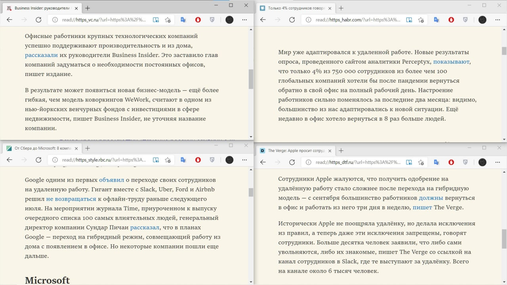

мы можем потерять целые поколения.
Мне нужно признаться: я никогда не работал в офисе. Да и новые молодые программисты тоже. Да и новые молодые работники в принципе тоже. Мы никогда не сидели в опенспейсах, не бывали в переговорках и не пили воду из кулеров. И, возможно, никогда уже не сделаем это.
Пандемия показала, что из зданий нужны только заводы и датацентры. Людей же можно оставить дома, да они и сами этого яростно хотят (смотри фото). Если так пойдёт дальше, то от офисов могут отказаться вовсе. Не знаю, как тебе, но мне нравится эстетика офиса, когда есть видимая (!) кучка людей, работающая ради какой-то цели, которую они все считают важной (есть разные случаи, но всё же задумывалось это так). Офисный антураж резко станет ретро, который будет встречаться лишь в фильмах и сериалах, и мы его больше никогда не увидим вживую.
А должны ли мы его видеть?
